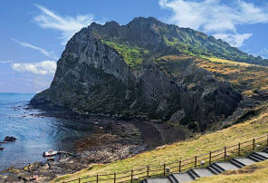
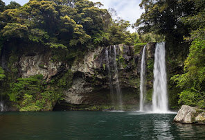
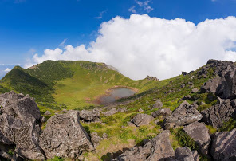

성산일출봉
|
|
성산 일출봉(城山 日出峰)은 서귀포시 성산읍에 있는 산이다.
커다란 사발 모양의 분화구가 특징으로, 분화구 내부의 면적은 129,774m2이다. 높이는 182 m이다. 성산 일출봉에서의 일출은 대한민국에서 가장 아름다운
해돋이로 꼽히며 영주십경 중 하나이다. 일출봉 분화구와 주변 1 km 해역이 2000년 7월 18일 대한민국의 천연기념물 제420호로 지정되었다.
해저에서 화산쇄설물로 이루어진 퇴적암이 구성된 상태에서 용암이 분출하여 만들어졌다. 수중에서 폭발로 이루어진 응회구로서 분석구보다 규모가 작으나 분화구가 크고
쇄설물 입자가 작다. 대략 10만년 전에 생겨났을 것으로 예상되고 2만년 전 이후에 본섬과 연결되었을 것으로 추정된다. 한라산의 360여 개 기생 화산 중
유일하게 해저에서 솟아오른 봉우리이다.
|
|

천지연폭포
|
|
천지연폭포(天地淵瀑布)는 제주도 서귀포시 서귀동에 있는 폭포이다. ‘천지연’이란 이름은 ‘하늘(天)과 땅(地)이 만나서 이룬 연못’이라는 뜻이다.
폭포의 절벽은 화산활동으로 인해 생성된 조면암이 섞인 안산암으로 이루어져있다. 폭포수의 폭은 약 12 m 높이는 22 m, 연못의 수심은 약 20 m이다.
계곡에는 아열대성·난대성의 각종 상록수와 양치식물 등이 밀생하는 울창한 숲을 이룬다.
|
|

한라산
|
|
대한민국에서 가장 큰 섬인 제주도에 있으며 대한민국의 실효지배 영토 내의 최고봉이자 가장 높은 산(해발 1947미터).[6] 대한민국의 국립공원 중
하나이다.[7] 국립공원 전역이 유네스코 세계유산으로 지정되어 있다.[8] 그리고 대한민국의 실효지배 영토 내에 유일한 해상 활화산이다.[9] 이름을 풀이하면
은하수(漢)를 당긴다(拏)는
뜻으로 은하수를 붙잡을 정도로 높은 산이라는 뜻이다.[10] 금강산, 지리산과 함께 우리나라 삼신산(三神山) 중 하나로 꼽힌다.
|